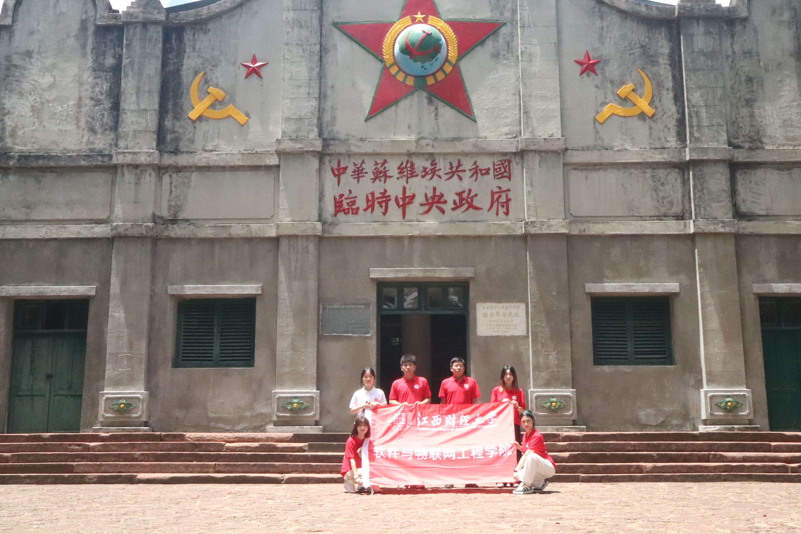
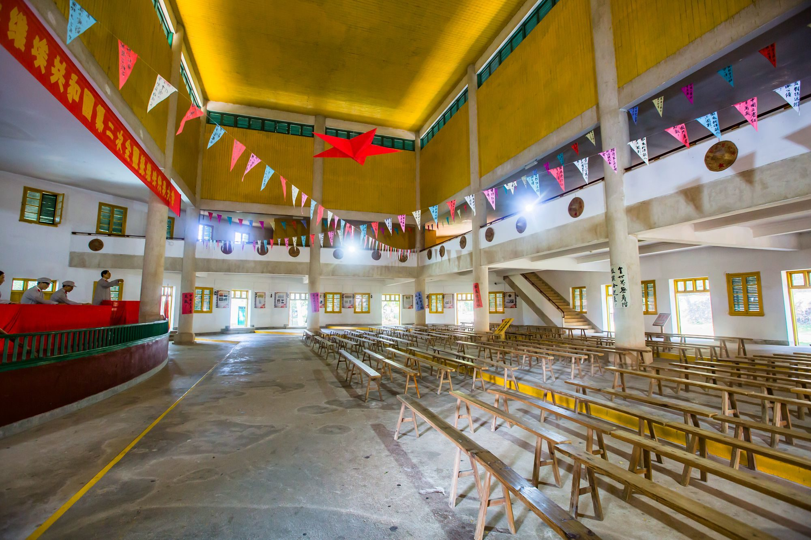

二苏大会旧址
二苏大，全称中华苏维埃共和国第二次全国代表大会，是中国革命历史上具有里程碑意义的一次重要会议，它不仅标志着中国苏维埃运动的深入发展，还为中国革命的未来走向奠定了坚实的基础。这里是中华苏维埃共和国的重要历史见证地，1934年的那场盛会，至今仍回响在历史的长廊中。大会的庄严、决议的深远、领袖的风采……这一切，都在这片土地上留下了不可磨灭的印记。
高校红色走读实践团在二苏大礼堂前合影

走进这座形似红军八角帽的临时中央政府大礼堂，在讲台中央栩栩如生的蜡像中看到了神采飞扬的毛主席指点江山，我们仿佛能听到当年大会的热烈掌声和激昂演讲，感受到那份浓厚的革命氛围。

这次会议汇聚了来自全国各地的代表，共同商讨国家大事，制定了多项重要决议和政策，对中国革命的进程产生了深远的影响。通过二苏大，中国共产党进一步巩固了红色政权，加强了与人民群众的联系，为中国革命的最终胜利奠定了重要的思想和组织基础。二苏大不仅是中国革命历史上的一次重要会议，也是传承红色基因、弘扬革命精神的重要场所。通过参观二苏大景区，人们也可以深入了解中国革命的历史和红色文化的内涵。